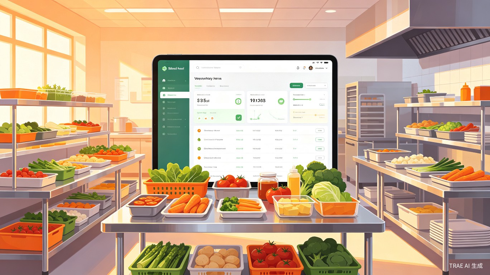
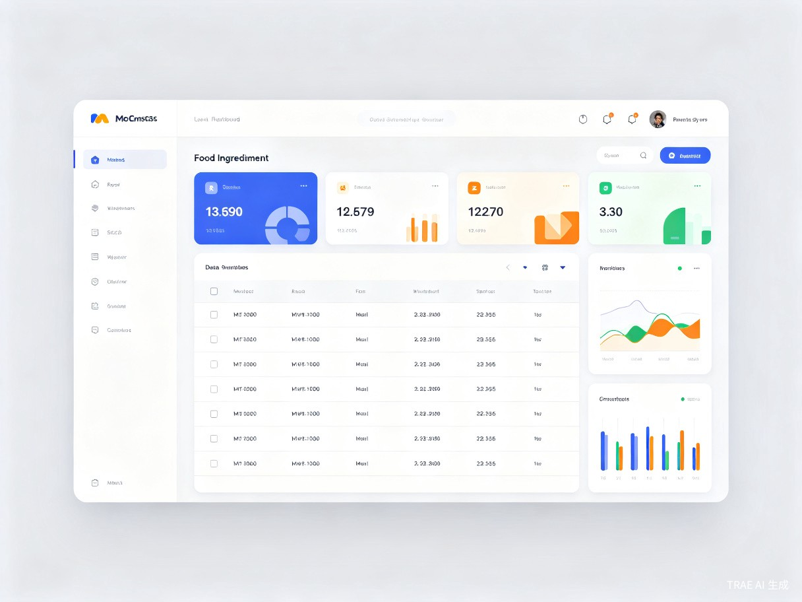
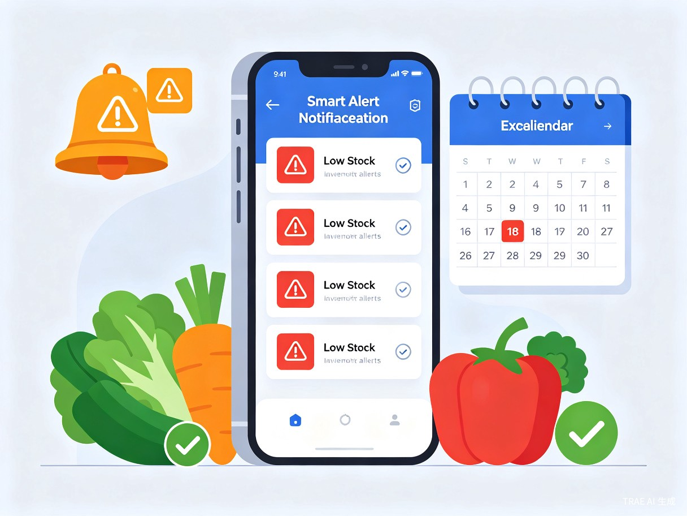
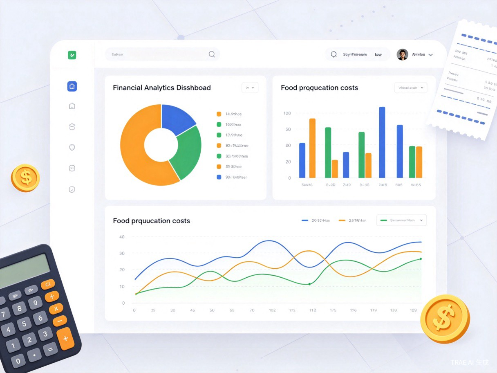
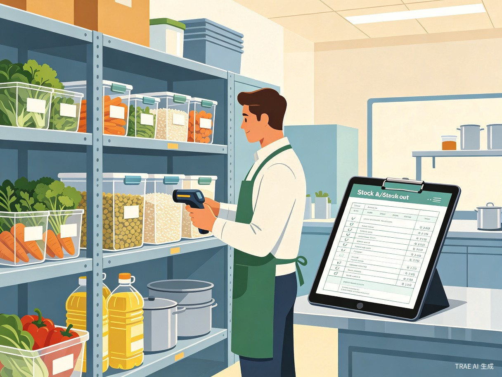

从食材采购入库到出库消耗，从库存盘点到财务分析，系统提供完整的闭环管理能力，让食堂运营更高效、更透明。
| 文件 | 行数 | 职责 |
|---|---|---|
| main.py | ~2020 | 主程序，16 个 UI 类（界面、对话框、主窗口） |
| database.py | ~960 | 数据层，8 张表 + 8 个 DAO 类 + 数据模型 |
| excel_handler.py | ~480 | Excel 导入导出处理 |
| generate_template.py | ~150 | 独立的导入模板生成脚本 |
| full_test.py | ~300+ | 自动化测试（51 项，覆盖 12 个模块） |
macOS 风格的精致界面，配合强大的后台逻辑，让食材管理变得简单高效。

食材总数、库存总值、低库存预警数实时展示，一屏掌握全局动态。

低库存提醒、过期预警、已过期食材集中管理，确保食品安全零死角。

月度收支分析、年度趋势图、分类占比、供应商占比，数据驱动采购决策。

入库自动增加库存、出库自动扣减、库存不足智能拦截，杜绝超卖。
采用成熟稳定的技术栈，确保系统可靠性和可维护性。
16 个界面类
8 个 DAO 类
8 张数据表
本地存储
系统内置丰富的数据统计与可视化能力，让管理决策有据可依。
从密码存储到数据库操作，全方位的安全防护机制。
密码使用 SHA256 哈希配合随机盐值存储，有效防止彩虹表攻击。
通过字段白名单校验机制，杜绝 SQL 注入风险。
关键操作使用 BEGIN/COMMIT/ROLLBACK 事务机制，确保数据一致性。